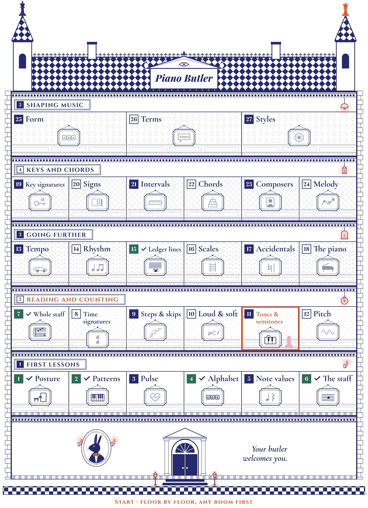

Your question (11:17): real lessons zigzag -- a little rhythm, a little note reading -- so should the course really go stage by stage, all of pitch before any rhythm? Your OK (11:19) to the answer: the house's floors become levels. Every floor mixes playing, pitch, rhythm and music rooms. Inside a floor the order is free; the room numbers show a suggested zigzag. A room that needs another one says so, but nothing is ever locked. A beginner now meets the crotchet in the first lessons, long before three ledger lines.
Each room teaches its floor's part. Its Lesson Book covers what fits that floor; the harder parts stay in its drill's higher levels (marked with their grade) or move to the room where they fit -- strong and weak beats to Time signatures, the natural to the new room Accidentals, three ledger lines to a Grade 2 stretch.
First lessons (Posture & hand shape, Keyboard patterns, Pulse & counting, The musical alphabet, Notes & rests, Reading the staff) -- Sitting well, the keys and their letters, a steady beat, the first note values and the staff.
Reading and counting (The whole staff, Time signatures, Steps & skips, Loud & soft, Tones & semitones, Pitch & range) -- Both staves, bar lines and time signatures, the first tunes, loud and soft, half and whole steps, high and low.
Going further (Tempo, Rhythm patterns, Ledger lines, Scales, Accidentals (new), The piano's story) -- Speed, quavers and dots, ledger lines, scales, accidentals, and the piano's own story.
Keys and chords (Key signatures, Signs, Intervals, Chords, Composers, Melody & phrasing) -- Key signatures, signs, intervals and chords, the composers, and how a tune is shaped.
Shaping music (Musical form, Musical terms, Styles & genres) -- How pieces are built, the Italian terms, and the styles of music.
AMEB: every room lists the grades its parts belong to. AMEB Preliminary is complete at the end of floor 4 (scales, key signatures, intervals and tonic triads of C, G and F are Preliminary). Floors carry no grade names, so nobody skips a floor by mistake.
How to answer: reply with codes, e.g. "C1 yes, C2 levels only, C3 ok". Pages: the house (2) · the 27 rooms (3-4) · what changes (5) · your decisions (6).
Drawn by the app's own code. Ticks: the six chapters that have their books. Clara stands in room 11 (Tones & semitones, drafted). The line under the house now says "Start · floor by floor, any room first".

"After" = the rooms it needs first (numbers in this list); never a lock. The order inside a floor is free.
| # | Room | Strand | Its book teaches on this floor | AMEB | After |
|---|---|---|---|---|---|
| Floor 1 · First lessons | |||||
| 1 | Posture & hand shape book done | playing | Sitting at the right height and distance, the hand shape, finger numbers. | practical, every grade | - |
| 2 | Keyboard patterns book done | playing | The black-key houses, high and low (the bird and the turtle), right hand 2 3 4, legato. | Preliminary (practical) | 1 |
| 3 | Pulse & counting | rhythm | A steady beat, counting out loud, the beat and the rhythm are not the same (clapped words). Strong and weak beats wait for room 8. | practical; groundwork for 2/4 and 3/4 | - |
| 4 | The musical alphabet book done | pitch | A to G on the keys, forwards and backwards, who lives there, a skip. | Preliminary | 2 |
| 5 | Notes & rests | rhythm | Semibreve, minim, crotchet, the quaver pair, the dotted minim; their rests as pictures. Rests on the staff and filling bars wait for room 8. | Preliminary (incl. the quaver) | 3 |
| 6 | Reading the staff book done | pitch | Lines and spaces, step or skip, the Queen's five and the King's five, Clara's C. | Preliminary (treble), Grade 1 (bass); practical from the start | 4 |
| Floor 2 · Reading and counting | |||||
| 7 | The whole staff book done | pitch | Queensland and Kingsland, every line and space, the five landmarks, the fold. | practical from the start; Music Craft Grade 1 (bass clef) | 6 |
| 8 | Time signatures | rhythm | Bar lines, the double bar line and the repeat sign; 2/4 3/4 4/4; strong and weak beats; filling a bar; rests on the staff; a tie across the bar line. (6/8 and cut time: later drill levels.) | Preliminary (2/4, 3/4, bar lines), Grade 1 (4/4, 6/8) | 5, 6 |
| 9 | Steps & skips | reading | Pitch and rhythm together: tiny tunes, up/down/same, a step and a skip, C and G five-finger positions. | Preliminary (practical) | 6, 8 |
| 10 | Loud & soft | music | pp p mf f, getting louder and softer; staccato, and the sign for the legato they already play. | Preliminary (pp p mf f, staccato, legato), Grade 1 (mp ff cresc. decresc.) | 2, 6 |
| 11 | Tones & semitones drafted | pitch | The half step and the whole step, E F and B C, the black keys' two names, sharps and flats on the staff. (The natural: room 17.) | Preliminary (sharp, flat), Grade 1 (tones and semitones, enharmonic) | 7 |
| 12 | Pitch & range | about | High, middle and low; the instrument families; why big is low and small is high. | Preliminary (high/mid/low, instrument families) | 2 |
| Floor 3 · Going further | |||||
| 13 | Tempo | music | Slow to fast: Adagio, Andante, Moderato, Allegro; the metronome. (rit., a tempo: Grade 1, later drill levels.) | Preliminary | 3 |
| 14 | Rhythm patterns | rhythm | Quaver groupings, the dotted crotchet, starting before beat 1. (Syncopation, semiquavers, triplets: later drill levels.) | Grade 1 (quaver groupings, dotted crotchet, syncopation; Theory Grade 1 anacrusis), Grade 2 (semiquavers, triplets) | 8 |
| 15 | Ledger lines book done | pitch | One and two little ladders above Queensland and below Kingsland, between the lands, five Cs. (Three ladders: drill level 6, a Grade 2 stretch.) | Preliminary (one below the treble), Grade 1 (one above and below both; Theory: two), Grade 2 (three) | 7 |
| 16 | Scales | pitch | C, G and F major: whole whole half whole whole whole half, the scale degrees, the fingering. (D, B flat, the minors: later.) | Preliminary (C G F), Grade 1 (D B flat, harmonic minors) | 11 |
| 17 | Accidentals (new) | pitch | The word accidental; the natural; a sign lasts until the bar line, on the same line or space; reading tunes with them. | Grade 1 (natural) | 11, 9 |
| 18 | The piano's story | about | Before the piano, Cristofori, inside the piano, the eras. | general knowledge | - |
| # | Room | Strand | Its book teaches on this floor | AMEB | After |
|---|---|---|---|---|---|
| Floor 4 · Keys and chords | |||||
| 19 | Key signatures | pitch | C, G and F major (then D, B flat); a key signature lasts the whole piece, an accidental one bar. (All 15 keys, the circle: later.) | Preliminary (C G F), Grade 1 (D B flat) | 16, 17 |
| 20 | Signs | music | Tie or slur? D.C., D.S. and Fine. (8va and ornaments: later.) | practical | 9, 10 |
| 21 | Intervals | pitch | By number, a 2nd to an octave (a step is a 2nd, a skip a 3rd); then major and minor 3rd, perfect 4th, 5th, octave. | Preliminary (M3 m3 P4 P5 P8), Grade 1 (all diatonic by number) | 9, 16 |
| 22 | Chords | pitch | The tonic triads of C, G and F; then I and V. (IV, inversions, cadences: later.) | Preliminary (tonic triads), Grade 1 (I, V) | 21, 19 |
| 23 | Composers | about | The eras, who lived when, who am I, name that tune. | general knowledge | 18 |
| 24 | Melody & phrasing | music | What makes a tune, phrase marks and breathing, question and answer, sequences. | practical, Grade 1 and up | 9, 20 |
| Floor 5 · Shaping music | |||||
| 25 | Musical form | music | Same section or new: AB, ABA, rondo. | Grade 2 and up | 24, 20 |
| 26 | Musical terms | music | The Italian terms by grade, gathered from Loud & soft and Tempo. | Preliminary to Grade 4 | 10, 13 |
| 27 | Styles & genres | about | Textures and style traits. | general knowledge | 23 |
A separate reviewer checked the order, every "after", the floors and the AMEB column against what each chapter teaches today. Fixed from its list:
The app: The map, the books shelf, "Chapter n" in every book and the teacher’s Chapters tab all follow the new order. "Next" points to the lowest unfinished room on your floor. A room opened before its "after" rooms shows one gentle line, e.g. "The whole staff first?" -- no lock. The new room Accidentals gets its own drill entry; its book comes when its turn comes.
The books: The six finished books keep their pages. Their chapter numbers change: The whole staff becomes 7, Ledger lines 15, The musical alphabet 4, Reading the staff 6. Places that name another chapter by number ("Chapter 4’s D", "the letter names come in chapter 3", "Next: Chapter 5") name it by its room instead. Ledger lines’ third ladder becomes a Grade 2 stretch in its Teacher copy.
The guides: The guides’ front page and the Workbook’s colouring house show the new floors. "Chapter 6 of 26" becomes "Chapter 15 of 27" on the guide pages.
The drills: When their books are made, the first drill levels of Scales and Key signatures become C, G and F (today they start with C G D A E and "up to 4 sharps or flats").
The look of the books and the house, the cast, the Book rules, the guide pages' words, the drill levels of the finished chapters.
The five floors and the 27 rooms as in the table, with the new room Accidentals (16).
Recyes.
Floor names: (a) First lessons · Reading and counting · Going further · Keys and chords · Shaping music (첫 레슨 · 읽고 세기 · 더 멀리 · 조와 화음 · 음악의 모양); (b) just "Level 1-5"; (c) your own.
Rec(a). The plaque already shows the number.
The "Know the music" rooms: spread over the floors (Pitch & range on 2, The piano’s story on 3, Composers on 4, Styles on 5), or kept together on a top floor marked "any time".
Recspread, so every floor is mixed.
Numbers: one running number 1-27 in the suggested order; free order inside a floor; "next" is the lowest unfinished number on your floor.
Recyes.
"After" rooms: shown to the teacher, and as one gentle line when a student opens a room early. Never locked.
Recyes.
Each room’s book teaches its floor’s part. Harder parts stay in the drill’s higher levels with their grade, or move to the room where they fit.
Recyes.
The six finished books: new numbers, references by room name, "Next" lines changed; nothing else.
Recdo it in one phase after your OK, with the map.
Room names short enough for six in a row: room 11 says "Tones & semitones" (not "Sharps & flats"); Korean Steps & skips "걸음·건너뛰기" (today’s "이웃음·건너뛰기" is cut off).
Recyes.
The next books, in path order: finish Tones & semitones (11, drafted), then floor 1’s Pulse (3) and Notes & rests (5), then floor 2’s Time signatures (8), Steps & skips (9), Loud & soft (10), Pitch & range (12) -- so a beginner can do floors 1-2 with books.
Recyes.
Exams: a separate AMEB checklist by grade (Preliminary, Grade 1 ...), built from each room’s AMEB parts, for students preparing an exam.
Recyes, later.